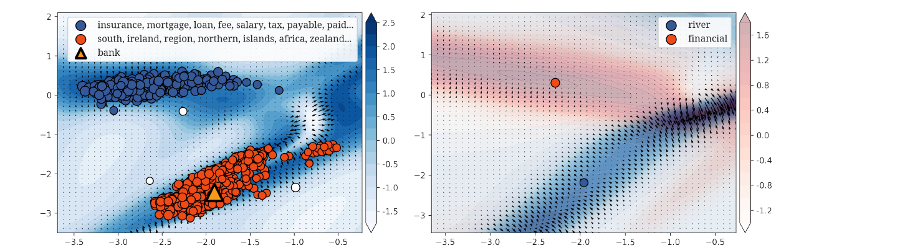

Nonlinear Semantics and Linear Language Models
Language models face two distinct representation problems. Semantics is often multimodal, continuous, and context-dependent, while sequence computation must continually write history into finite states under finite time. We study nonlinear functions as representations of semantic structure and linear-time recurrences as mechanisms for selection, forgetting, and contextual update.
Keywords nonlinear representations · semantic fields · polysemy · state-space models · linear attention · Delta Rule
Two Meanings of “Linear”
Linearity in word embeddings means that semantic objects are points in a vector space and compose by vector addition. In a linear language model, “linear” usually means that computation grows as with sequence length , not that the model represents only linear functions. Mamba and DeltaNet contain input-dependent gates, projections, and nonlinear networks; they compress cross-time information into a fixed-size recurrent state.
The two problems share a structural tension. Static vectors compose easily but struggle to represent multiple separated semantic modes. Finite-state recurrence processes long sequences efficiently but must decide what to write, overwrite, retain, and forget. The first concerns the geometric capacity of semantic space; the second concerns the memory capacity of temporal state. Their connection clarifies how finite representations can preserve both polysemy and long-range dependence.
FIRE: From Semantic Points to Semantic Fields
In our NeurIPS 2022 paper, FIRE, a word is represented not by one vector but by a pair consisting of a positional measure and a continuous nonlinear function:
places the word at one or more locations in a -dimensional semantic space, while gives the semantic intensity generated by the word across the entire space. Similarity is the mutual response of the two functions at the other word’s locations:
Multiple locations and peaks jointly represent polysemy; composition remains linear addition of functions and measures. The financial and river senses of “bank” can form separate peaks, while adding the functions for “river” and “financial” still creates a field close to “bank.” No fixed inventory of discrete senses is required.

FIRE constructs each nonlinear word function from the Jacobians of multilayer planar transformations. Even a two-dimensional field can develop visually interpretable multiple modes. At matched parameter counts, FIRE is competitive on word and sentence similarity; on WordNet-based sense-count prediction, its field geometry separates monosemous and polysemous words more clearly than Word2Vec, Gaussian mixtures, and contextual BERT embeddings. Contextual vectors disambiguate a word in a given sentence, but that is not the same as explicitly representing the word’s full multimodal semantic structure.
From Quadratic Attention to Finite-State Recurrence
Standard self-attention compares pairs of positions. Its training cost and attention matrix scale approximately as , while autoregressive inference stores a KV cache that grows with context. Linear-time models compress history into a state :
When , , and depend on the current input, the overall sequence mapping remains highly nonlinear. Efficiency comes from avoiding explicit position pairs, not from eliminating content dependence. The difficulty therefore changes: full attention can revisit stored tokens, whereas a fixed-state model must compress history online, making state capacity and update rules central to retrievability.
Mamba: Selective Propagation and State-Space Duality
Mamba makes the parameters of a structured state-space model input-dependent, allowing the model to select which information propagates or is forgotten. A selective step size controls timescales, while input and output projections control writing and reading. Recurrent inference remains linear in sequence length, and a hardware-aware parallel scan supports efficient training.
Mamba-2 establishes structured state-space duality between selective SSMs and attention over semiseparable matrices. This is more than an acceleration result: it offers a shared language in which attention is explicit token-to-token interaction and an SSM is a recurrent compression of related structure. Their expressive limits can then be compared through state rank, temporal decay, and content selection.
Finite state remains the central constraint. Several long-lived semantic modes may interfere in one subspace; rapid forgetting improves local adaptation but can break retrieval across sections. We therefore study effective dimension, timescale spectra, and whether saturated selection gates produce abrupt memory loss or critical forgetting.
DeltaNet: Updating Memory by Prediction Error
Linear attention commonly maintains a fast-weight matrix by accumulating key–value outer products. Pure addition allows similar keys to pile up, causing interference. DeltaNet instead uses a delta rule:
The term is the state’s prediction error for the current key. Only the part not already stored is written; reusing a key selectively corrects the old association instead of adding without bound. DeltaNet uses a compact product of Householder matrices for parallel training, scaling this update rule to billion-parameter language models.
Gated DeltaNet combines a decay gate with the delta update: gating clears obsolete global memory, while the delta rule precisely overwrites individual associations. Subsequent Kimi Delta Attention develops richer state transitions. The central competition among linear-time architectures is therefore not just the choice of kernel, but the implementation of four operations in a fixed state: write, erase, overwrite, and read.
Research Questions and Applications
Our next questions concern the relation between nonlinear semantic structure and recurrent memory. How many independent modes are required to store a polysemous concept? Can a finite-rank fast weight preserve a function-valued rather than point-valued semantic representation? How do selection gates and delta updates change attractors and accessible dimension? Spectral analysis, correlation dimension, and controlled memory tasks can turn these into measurable criteria.
Applications include long-context language models, low-KV-cache inference, and persistent agents. The objective is not to assume that every linear-time architecture will replace the Transformer, but to determine the state capacity and update mechanisms under which complex semantics survive—and when local or global attention is still required as externally addressable memory.
Related Paper
Xin Du and Kumiko Tanaka-Ishii. FIRE: Semantic Field of Words Represented as Nonlinear Functions — paper overview. NeurIPS 2022. Paper · Code